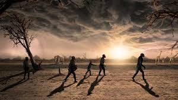

Walking & Early Human Migration
Era: Prehistoric
Walking was humanity’s first form of transportation. Early humans traveled vast distances on foot, migrating across continents in search of food, shelter, and new environments. These journeys shaped human evolution and global settlement.
Type: Early Human Mobility